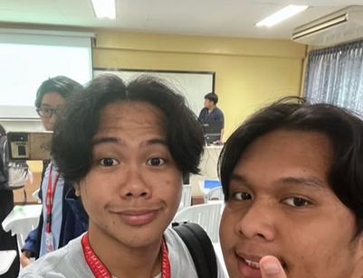
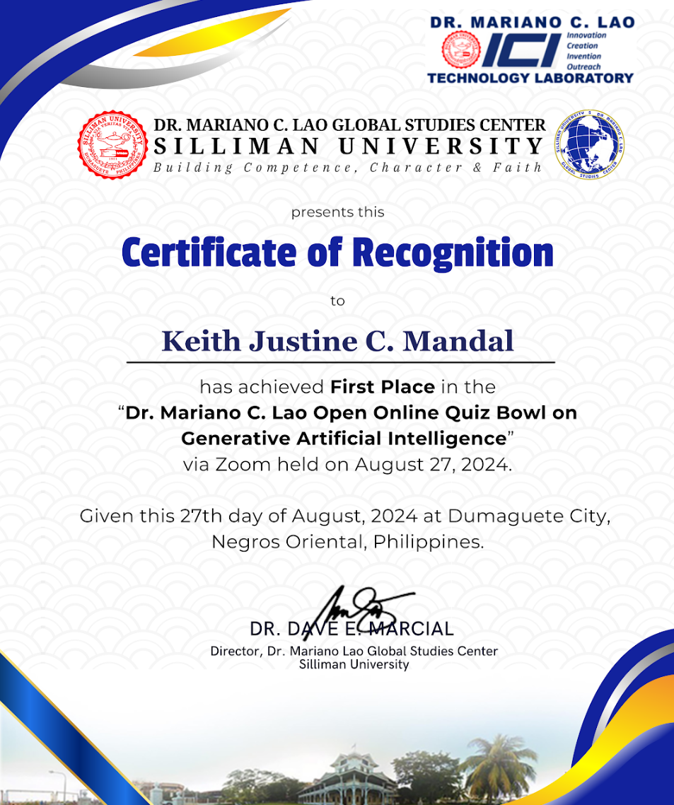

The Classroom
The classroom is a major component of the “second home” of students. Teaching at Silliman is made to challenge students to question prevailing concepts and theories, and find meaning in them in their day to day activities. Important to Silliman University is a mentoring system that walks students through the learning process of life.
Miller Solutions Development Inc. Industry Lecture “Web Development: Latest Trends and Strategies”
Organizer: Confederates Student Council
Date: December 15, 2024 – 10 PM
Involvement: Spectator
Last August 19, I attended the workshop about Web Development with speakers from Miller. This event focused on teaching what new frameworks were used in Web Development using new Javascript systems.
For me, this event is really important because of how strategies in technology evolve really fast. So having the opportunity to listen on discussions about the latest trends and strategies for web development is great. This workshop was informative, especially when they were talking about the problems of using plain JS. Using different frameworks for the user experience like using Vue or Angular really helps with efficiency of the program and has a wide range of support since most developers are already using these frameworks.
This event made me think about pursuing more on web development because it is really interesting and it is manageable. I think it would be very beneficial for me to explore into all the other frameworks of web developing.
Because of this activity, I am more intrigued at learning and improving on JavaScript. Especially, on its new frameworks and other uses.

Balik Talent Lecture “Big Data and IoT: Why They Matter in Innovation”
Organizer: Confederates Student Council
Date: December 15, 2024 – 10 PM
Involvement: Spectator

Guidance and Counseling Group Dynamics Activity
Organizer: Confederates Student Council
Date: December 15, 2024 – 10 PM
Involvement: Spectator
Last August 21, I was required to attend the Guidance Counseling Group Dynamics Activity hosted by our college. All first year students where required to join this activity. Because this is a guidance activity, the session was all about building connections.
For the guidance activities, we participated in teambuilding games. We had games like group yourself, the evolution game that was somewhat inspired by rock-paper-scissors, and my personal favorite the yarn game where we had to form shapes. From what I understood of that game, it was about having trust with your team and teamwork. Towards the end of the event, we also had to fill up our guidance forms.
This event was very insightful to me because it helped me understand how to build deep connections with others. Participating in this event also helped me build new friendships.
Because of this event, I got to know a lot of people in my department. It was fun being able to experience this style of guidance activities because it encourages interaction. This event taught me that we should have trust and support to each other so that we can have good outcomes.

Miller Solutions Development Inc. Industry lecture “Designing Intuitive User Experience: Key UI/UX Strategies”
Organizer: Confederates Student Council
Date: December 15, 2024 – 10 PM
Involvement: Spectator
This is the second Industry Lecture with speakers from Miller. This event done on August 22 and the main target was to explore on being able to design websites with good user experience.
The last Miller event tackled on the backend or functionality, and now the next topic is on frontend which is the design and user experience. The discussion was solely focused on how UX should create and improve people’s experiences with their life and work and also improving digital products and services. The major lesson that I’ve learned from this workshop is having consistency with design. Having consistency ensures that your design has readability and ease of use.
The activities were also really fun and insightful. I’ve learned a lot of new skills from designing with software’s like Figma and also had the chance to apply what I’ve learned during the workshop. The speaker’s story also inspired me a lot because she landed a job with the skills that she learned from YouTube.
Because of this activity, I got to learn designing strategies which I can hopefully apply in my future projects. Participating in the activities also taught me new skills with using designing software.

Dr. Mariano Lao Open Online Quiz Bowl on Generative Artificial Intelligence
Organizer: Confederates Student Council
Date: December 15, 2024 – 10 PM
Involvement: Spectator
Last August 27, 2024, I joined the Dr. Mariano Lao Open Online Quiz Bowl on Generative Artificial Intelligence through a zoom meeting and Kahoot. We had three rounds in total, and the Quiz Bowl was only about Generative AIs origins, its implications, and its uses.
I saw this event through an email and was initially not going to join because of a conflict of my class schedule, but I pushed through because it was founder’s week. At first, I expected it to be a difficult quiz bowl with competitors from different because it was an open quiz bowl. However, most of the participants were from Silliman and what surprised me was that I was the only one from the College of Computer Studies.
This experience is not new to me since I’ve joined quiz bowls and other relevant competitions before. Prior to this event, I did not study anything about the subject, that was the only thing that made it somewhat difficult for me, but I still pushed through and won the Quiz Bowl. What I liked about this experience is that it was really fun, and it was also thrilling for me since I was in a car during the entire event.
Because of this activity, I even more inclined to learn the implications of AI. Winning this competition also validated what I learned. Joining this activity also encouraged me to study more about AI and how it could be used for good.

University-wide Orientation
Organizer: Confederates Student Council
Date: December 15, 2024 – 10 PM
Involvement: Spectator

Freshie Orientation
Organizer: Confederates Student Council
Date: December 15, 2024 – 10 PM
Involvement: Spectator

Silliman Campus Tour
Organizer: Confederates Student Council
Date: December 15, 2024 – 10 PM
Involvement: Spectator
I’ve always been intrigued at the history of Silliman, the story of its campus and the origins of the buildings. Together with my group, we had a tour on the Silliman Campus with ate Enrica. This activity was required for us to do as an activity in GE10.
Before I enrolled in this school, I’ve already known some history of Silliman because my entire family graduated from this school. So as I’ve expected the information that I have heard from my parents were accurate with what our campus Ambassador was saying. What I really expected during this tour was the rich history of Silliman and the significance of each of the structures built in the campus.
I could really see the benefit of doing this activity. Learning the history of our school is really important and to me it is also very interesting. One thing that really amazed me is the fact that Silliman has more than 300 acacia trees. This really surprised me because when I roam around the school, I could only count to about 50 because of how big they are. But I failed to realize how big the campus really is.
Because of this activity, I realized how rich the history of Silliman is. The campus tour taught me a lot also with how each of these buildings had already played a major role in the history of this school. I could really see that this school made a very pivotal impact on this city.